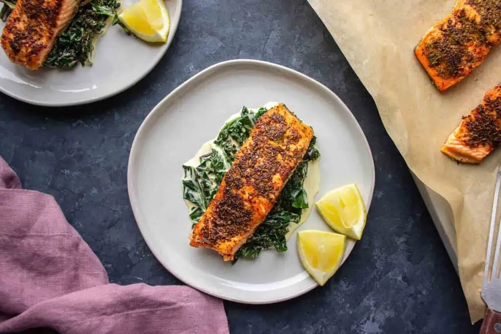

Home
Fennel Caper Salmon

Ingredients
- 1 tablespoon olive oil
- 1 fennel bulb, thinly sliced
- 2 garlic cloves, minced
- 4 salmon fillets
- 2 tablespoons capers, rinsed and drained
- Salt and pepper to taste
- Juice of 1 lemon
Instructions
- Heat olive oil in a large skillet over medium heat.
- Add the sliced fennel and cook until softened, about 5 minutes.
- Stir in the minced garlic and cook for another minute.
- Push the fennel to the side of the skillet and add the salmon fillets, skin-side down.
- Season with salt and pepper, then sprinkle capers over the top.
- Cook for about 6-8 minutes, or until the salmon is cooked through.
- Drizzle with lemon juice before serving.